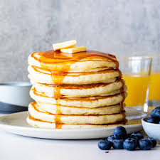

Shortbread Cookies

This classic shortbread cookie recipe makes rich, buttery, melt-in-your-mouth press cookies using just 4 simple
ingredients that you probably have in your pantry. They're easy to decorate and perfect for Christmas cookies plates.
Ingredients
- 2 cups butter, softened
- 1 cup white sugar
- 2 teaspoons vanilla extract
- 4 cups all-purpose flour
Steps
- Gather all ingredients
- Preheat the oven to 350 degrees
- Beat softened butter and sugar together
- Stir in vanilla; add flour and mix well until combined